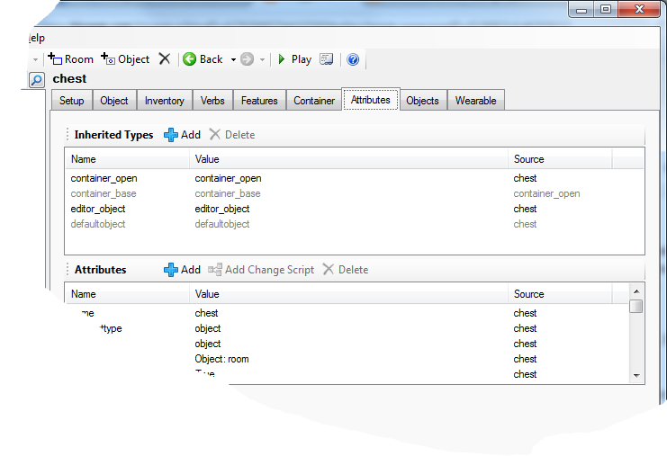

Using inherited types
Object types in Quest offer a way to give a group of things the same properties.
About Types
Before getting down to how we use types in Quest, we will discuss what types are and why they are useful.
Types is how Quest supports object-orientated programming. The basic idea is that the Quest world is made up of any number of objects, and that these objects differ in their attributes. Where types come in is how we group objects together.
For example, you might have a lot of NPCs (non-player characters) in your game; you could make them all of the “npc” type. A group of them might be security guards, and the security guards are all pretty much the same, so they could be of the “securityguard” type.
The clever bit is that we can make the “securityguard” type itself be of the “npc” type.
Now when we create a new security guard, and give him the “securityguard” type, he will get all the default attributes of a security guard, and he will also get given the “npc” type, so will also get all the default attributes of an NPC - except those set by the “securityguard” type.
You can add as many types as you want to an object (the technical term for this is “multiple inheritance”). You may well want to add “male” or “female”, so his or her pronouns are right.
Alternatively, you could add the “male” type to the “securityguard” type, so now “securityguard” inherits from both “npc” and “male”. Then when you create a security guard, you do not need to add the “male” type too, but you still have the option to add the “female” type to make a female guard (but make sure “female” is added after “securityguard”).
A great advantage of using types is that you only need to do things once. If you have a special script for NPCs, you just give that script to the “npc” type, and all your NPCs have it. If you later find you want to alter it, you just alter it fo the type, not each NPC. If you later realise you want your NPCs to inheir from another type (perhaps to support conversations with dynamic menus), you can add the new type to the “npc” type.
Quest types
Quest has several object types built in, such as the editor_object type and the editor_room type; it uses these two to flag whether something is an object or a room (incidentally, these types are only there when you are editing the game; when a game is published editor types are not included).
You can see the type of an object by going to the Attributes tab; the top pane is a list of types. Here is an example for an openable container:

As you can see, something in Quest can be more than one type. As well as being an editor_object type, this is also a container_open type. Also, in grey, it is a container_base; this is an inherited type, my object has this because container_open inherits from container_base. It is also a defaultobject, which is in grey too, because everything in Quest has the defaultobject type.
My container gets all the properties of the types it has inherited, which is how it will work as a container with minimal effort from me. Note that container_base sets up a closed container, but that that value is overridden by container_open. I can further change any of the setting to suit my needs.
You can do all that without knowing what types are, but sometimes we want to do more, and hopefully this tutorial will show you how.
Testing for Types
You can test if an object is of a certain type in a script or function using the DoesInherit function. In code, it might look like this:
if (DoesInherit (fireball_spell, "spell")) {
// do stuff
}
Here, “fireball_spell” is the thing we are testing, and we want to know if it is of the spell type. I am guessing it is.
As mentioned, an object can have several types, and this function will tell you about all of them, even the ones that would appear in grey on the Attributes tab.
Creating new types
Creating your own types is a great way to extend Quest for your own needs. Any time you have a bunch of things that are all pretty similar in what they do, but a bit different to anything already in Quest, consider creating a new type.
As an example, we are going to create a spell type. The easiest way to do that is to first do it for an actual example of the type, a prototype, and then to move the code from the object to the type (unfortunately, you can only do it this way with the off-line editor).
Create a prototype
So the first thing to do is to create an actual spell, let us call it “fireball spell”. You cannot drop a spell, and you cannot pick one up, so on the Inventory tab, untick “Object can be dropped”.
Something we can do with spells is to learn them, so next we will add a “learn” script to it. Go to the Verbs tab, and add a “learn” verb. Set it to run a script, and paste this code in:
if (not this.parent = game.pov) {
this.parent = player
msg ("How about that? You can now cast " + GetDisplayName(this) + ".")
}
else {
msg ("Er, you already know that one!")
}
Briefly then: The first line of the script checks that the player does not already hold the spell. The next line moves this spell to the player, and the next line lets the player know this happened.
“this”
The important point to notice about the code is that it uses “this”. In Quest, “this” refers to the thing the script is attached to. In this case, that will be the spell. Later on this code will be used by the type, and it could be any spell, so we need to keep it generic; nothing there referring to this specific spell by name (this does mean using text processor commands in types is tricky…).
Go in game, and you should be able to learn the spell, and it will appear in your inventory.
Create a type
So now we are ready to create a new type. Right click in the Quest right pane, and select “Add Object Type”, in the box type “spelltype”, and click “Okay”.
So far so good, but it does not do anything yet. We will change that by copying code. It may look scary, but if you are careful, it will be pretty easy.
On the menus, go to Tools - Code view. This will show you the code that is your game. If you are not familiar with XML, it will not make much sense, but do not worry about that. Somewhere there will be a bit like this (if you do [CTRL]-F, you can search for “fireball” to find it quickly):
<object name="fireball spell">
<inherit name="editor_object" />
<drop type="boolean">false</drop>
<learn type="script">
if (not this.parent = game.pov) {
this.parent = player
msg ("How about that? You can now cast " + GetDisplayName(this) + ".")
}
else {
msg ("Er, you already know that one!")
}
</learn>
</object>
Somewhere else (probably at the bottom) you should find this:
<type name="spelltype" />
Step 1. Expand the type XML. Quest is using a condensed form of XML for the type because there is nothing in it. Change it to this:
<type name="spelltype">
</type>
Step 2. Cut the attributes from the fireball spell to leave just this:
<object name="fireball spell">
<inherit name="editor_object" />
</object>
Step 3. … And paste them into the type:
<type name="spelltype">
<drop type="boolean">false</drop>
<learn type="script">
if (not this.parent = game.pov) {
this.parent = player
msg ("How about that? You can now cast " + GetDisplayName(this) + ".")
}
else {
msg ("Er, you already know that one!")
}
</learn>
</type>
Now go Tools - Code view again, to get back to the GUI.
Now if you look at the spelltype, you should see it has a whole load of attributes.
The last thing to do is to go back to the fireball spell, and on the attributes tab, to add “spelltype” to its list of inherited types.
Now go into the game, and see if you can still learn that spell.
More on Creating Types
When you are creating types yourself, you may not want all the attributes in your prototype to be in your type. The best approach then is to copy the code from the prototype, rather than cutting it. Then, when you are in the GUI again, go to the type, and delete the attributes you do not want in the type. Then go to the prototype, and delete from there the attributes you do want in your type there.
A Note About Lists and Dictionaries
It is worth noting that attributes on types are not mutable - they cannot be changed. You might never notice this, because if you have an object and you attempt to assign a value to an attribute that is set in the object’s type, it works fine - behind the scenes when you assign it, the attribute stops being on the type, and is now on the object, and as far as the game is concerned the attribute value has changed. The problem only arises if you try to change the content of a list or dictionary, so unless you are sure a list or dictionary will not change during a game, I would advise against having them in types.